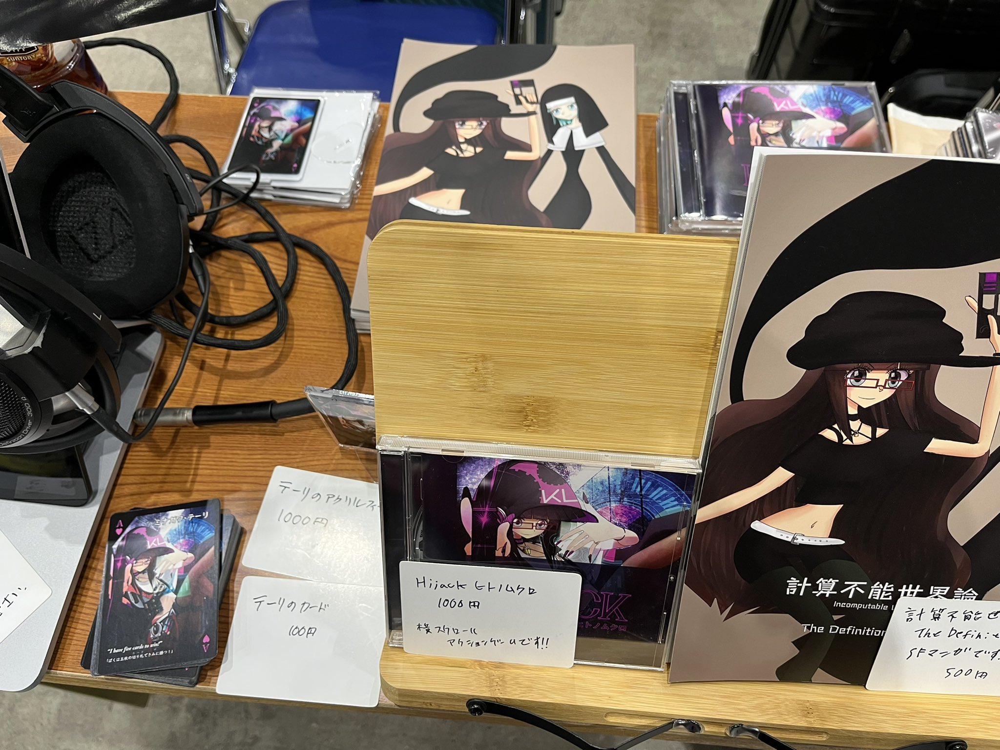

C101 参加レポート
コミケ（C101）に参加してきました。そのレポート記事です。
(2023-01-01)
参加前の準備、そして結果
設営

↑ こんな感じ。
今回はポスターをつくってみました。わかりにくいですが、下の画像がポスター（の一部）です。大きすぎて写真に収まってない。
コミティアまでは試遊の展示はしていたのですが、そもそも遊んでみないことには横スクアクションであることさえわからない展示になっていました。買い手の立場に立って考えてみると、内容がわからないようでは買おうにも買えないのも当然だと思います。
そこで今回はポスターにゲームのスクショを貼ってみようという試みです。
結果的に、ポスターが功を奏したのか、今回はだいぶ売れました。
カードとアクリルフィギュア
カードとアクリルフィギュアは完全に個人の趣味で、1部も売れないことさえ覚悟してつくったものですが、けっこう買ってくれるひとがいて意外でした。ゲームジャンルでもグッズの需要はあるのかな……？
漫画
今回は漫画も描きました。ゲーム新作を用意する時間がなかったことのほか、漫画は漫画で描いてみたかったというのもあり、こちらも1部も売れないことを覚悟していましたが、結果的には買ってくれたひとがいてよかったです。
いろいろなひととの交流
近隣のサークルさんとの交流のほか、一般参加のかたでも試遊後、応援メッセージをくれたかたもいて、とても素敵な時間だったと思います。
正直、コミケだけでなくイベントのいちばんいいところなんじゃないかなと思います。
ゲームシステムや設営へのフィードバック
イベントで試遊を展示すると、ゲームを遊んでくれていろいろなフィードバックをもらえます。単に応援してくれるひともいますし、ここをこうしたらいいんじゃないか、と提案してくれるひともいます。
すでに CD をプレスしてしまった関係上、アップデートはなかなか難しいのですが、次回作に活かしたいと強く思いました。
また設営に関しては、ゲームの内容がより伝わるようにするのが大事だなと思いました。
たとえばいまのところ、ほんとうに単なる横スクアクションとしてのスクショしかなく『ハイジャック』というシステムに関する説明がどこにもありません。これは大きな反省点です。（もっとも、以前の『横スクアクションということさえわからない』展示よりはだいぶアップデートされているのですが）
総合的な感想
月並みな感想になってしまいますが、イベントっていいものですね～。
なんというか、次回作をつくろうというパワーをもらえます。
ただ、同時に、もし1部も売れないことがあったら、立ち直れるかどうかという恐怖もあります。毎回イベント参加前は『今度こそ1部も売れなかったらどうしよう』と震えています。
いまのところそんなことはないので、次回作も粛々進捗し、基本的に毎回イベントに申し込んで、既刊だけでも持っていくつもりです。
今後の予定
COMITIA143に参加します。日程は 2/19 です。どうぞよろしくお願いします。